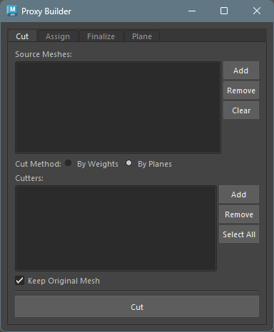
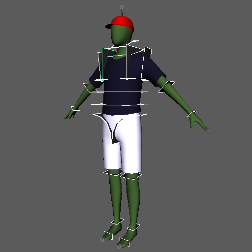
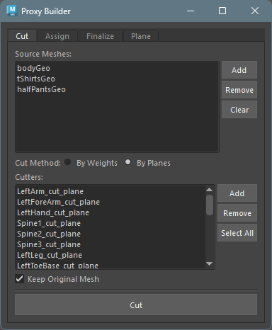
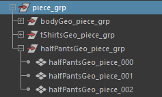
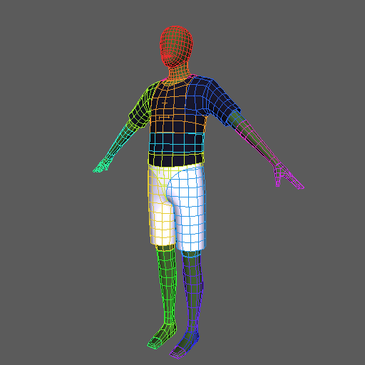
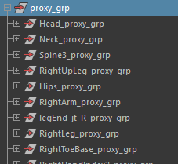
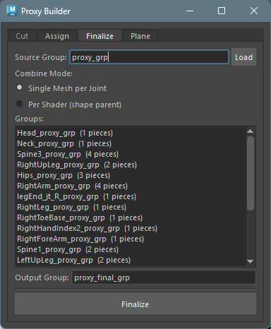
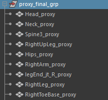
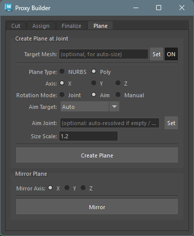
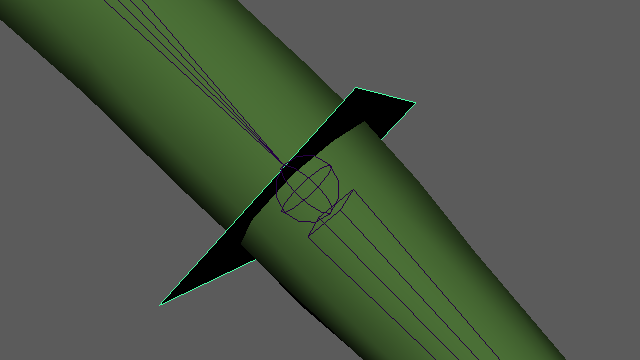

Proxy Builder
Overview
Proxy Builder is a tool for splitting a character model into per-bone pieces and assembling proxy geometry that follows each bone. It is used for creating simplified geometry for layout rigs and game engines.

How to Launch
Launch the tool from the dedicated menu or using the following command:
import faketools.tools.rig.proxy_builder.ui
faketools.tools.rig.proxy_builder.ui.show_ui()
Workflow
The expected basic workflow is as follows:
- Cutting the model — Split the mesh into per-bone pieces using weight boundaries or cutter planes
- Assigning pieces to bones — Assign each piece to a bone, generating groups with parentConstraints
- Finalizing the model — Combine geometry within per-bone groups into the final form
1. Cutting the Model

Split the mesh into per-bone pieces using weight boundaries or cutter planes.

Activate the
Cuttab in the tool.Register the model(s) to cut in
Source Meshes.In
Cut Method, choose whether to cut by weight boundaries (By Weights) or by cutter planes (By Planes).By Weights: Cuts the mesh at skin weight boundaries. Only works when the meshes registered inSource Mesheshave skin weights assigned.By Planes: Cuts the model using cutter planes (mesh or NURBS surface). Cutter planes can also be created from thePlanetab.
Click the
Cutbutton to cut the model. The cut pieces are generated under piece_grp.
To work on a duplicate of the model, enable theKeep Original Meshcheckbox before clickingCut.
2. Assigning Pieces to Bones

Assign each piece to a bone, generating groups with
parentConstraints.
The purpose is to verify that each piece has been
correctly cut to correspond to its skeleton.
Activate the
Assigntab in the tool.List the cut pieces in the upper list. You can bulk-load pieces from the group set in
Piece GroupusingLoad.Next, configure how to distribute the cut pieces to each skeleton. Select the method from
Assign Method.By Weights: Distributes pieces based on the skin weight coverage of the geometry set inReference Mesh.By Bones: Distributes pieces based on the distance between each geometry and the bone segments.
Register the target bones in the
Jointslist. Required forBy Bones. ForBy Weights, if the list is empty, bones are automatically determined from the skinCluster node.Click the
Assign & Create Groupsbutton. Each piece is grouped per bone.
3. Finalizing the Model
Combine geometry within per-bone groups into the final form.

Activate the
Finalizetab in the tool.Set the groups generated by the
Assigntab (proxy_grp) inSource Groupand clickLoad.Select the combine method for each bone’s geometry from
Combine Mode.Single Mesh per Joint: Combines pieces into a single mesh as-is.Per Shader (shape parent): Combines only pieces with the same shader, then parents the separate shader shapes under a single transform.Per Shader (shape parent)will produce an error if multiple shaders are assigned within the same shell.
Click the
Finalizebutton to generate the combined models.
Plane Tab
A helper tool for creating and mirroring cutter
planes used with the By Planes option in
the Cut tab.

Create Plane at Joint
Creates a cutter plane at a joint’s position.
The plane name is automatically generated from the joint
name (e.g., LeftArm_cut_plane).
Configure the options, select the joint(s) where you
want to create cut planes (multiple selection
supported), and execute Create Plane.

Basic Settings
- Target Mesh: Select a reference
mesh for automatic size calculation and click
Set(optional). After setting, useON/OFFto toggle whether to reference it.
Plane Type
| Type | Description |
|---|---|
| NURBS | Creates a NURBS plane |
| Poly | Creates a polygon plane |
For polygons, cutting occurs per face, so use the lowest resolution polygon possible. Polygons with more than 5 faces will produce an error.
Axis
Select the reference axis for the plane’s normal direction (X / Y / Z).
Rotation Mode
Select how the plane’s rotation (normal direction) is determined.
| Mode | Behavior |
|---|---|
| Joint | Uses the joint’s world rotation directly |
| Aim | Automatically calculates the normal direction based on Aim Target settings |
| Manual | Manually enter rotation values |
Aim Target (when Rotation Mode is Aim)
| Option | Behavior |
|---|---|
| Auto | Aims toward the child joint if there is exactly one; otherwise aims away from the parent |
| Parent | Aims away from the parent joint (bone progression direction) |
| Parent > Child | Aims from the parent joint toward the child joint |
- Aim Joint: Explicitly specify a target joint for aiming (optional). When set, the Aim Target selection is ignored.
When searching for child joints, those with the
io (intermediateObject) attribute set to
True are excluded.
Size Scale
When Target Mesh is set, automatic size calculation via raycasting is performed. Size Scale is a multiplier applied to the result.
Mirror Plane
Mirrors the selected plane(s) along the specified
axis. The mirrored name is automatically generated based
on left/right patterns (from shared config
mirror_patterns).
- Mirror Axis: Axis to mirror along (X / Y / Z)
- Select the plane(s) and click
Mirror
Design Principles
- Framework-independent: Uses only standard Maya operations. Does not depend on any specific rig framework’s API or naming conventions
- Verifiable between steps: Results of each step can be reviewed and adjusted before proceeding to the next
- Loosely coupled steps: Minimizes dependencies between steps, allowing you to start from any step
- Binding without tool API dependency: The relationship between bones and geometry is readable from the scene structure (naming + parentConstraint)